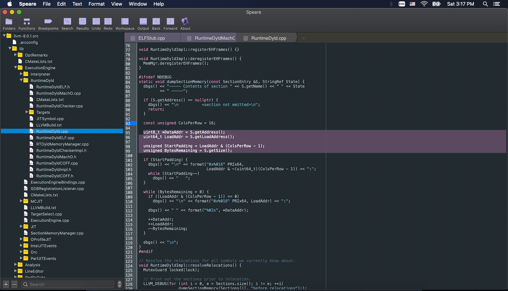

Speare
Version 1.2.344
The elegant code editor for scripting languages.
Speare is a small, free and friendly code editor. You can use it to edit source code files, programming and debugging. It designed to make programming feels light, simple and free. Speare code editor not only has an efficient code navigation and call routines tracing ability but also has flexibility to extend it to support special developing requirements. Speare code editor includes an ultra lightweight debugging environment for C, C++, Ruby, mruby, Lua, Python, PHP, Perl and Tcl, and give people complete freedom to control and customise the debugging environment for a new programming language.
It's free!

If you can't open the link above, please launch App Store and found Speare by searching. Please kindly donate the author by purchasing the pro version or other app developed by the author, your donation will drive the author to continually improve it, or please kindly recommend this app on your blog or rate this app so that helping other people can more easily find it.
Features
- Well designed workspace management. Intuitive and concise.
- Powerful code navigation and call routines tracing ability.
- Fast find edit points by symbol index, bookmarks or searching.
- High performance when managing large amount of files and big files.
- Full featured code editor. Powerful symbol parser for 90+ programming languages.
- Fast search and replace in current document, selected folder, opened files and entire project.
- Smoothly edit multiple files that written in different programming languages simultaneously.
- High performance symbol parsing engine for auto-completion and jump-to-definition.
- Parallel editing. Fast editing two arbitrary files in parallel text views.
- Real-time Diff. Show coloured code block of file changes with editing actions instantly.
- Efficiently manage working on files across exit, re-launch and project switching.
- Powerful built-in code formatter (code beautifier).
- Fast project switching and powerful insisted bookmark management.
- Keeping entire state after quit, the opened files, selection of each file and the cursor location.
- High extensible. Built-in debugging environment for C, C++, Ruby, mruby, Lua, Python, PHP, Perl and Tcl.
- Syntax checking, run code and unit test instantly, unlimited extension by shell scripts.
- Full featured Markdown and HTML5 editor and previewer, run Javascript code instantly.
- Unlimited go back and forward, automatically remember jump location and current editing locations.
- Preview all kinds of files, image, SVG, PDF, office documents, audio and video etc.
- Fonts and colours customisation for the text editor.
- Ultra lightweight.
Screenshot

Screenshot of LLVM in Speare code editor.
What's new
1. Improvement of "Lite Mode", i.e. without toolbar and hidden workspace, this is useful and feels more light when open and edit several file but not work on a project that has large number of files. This function turn Speare to a TextEdit-like text editor but has more features, such as line number display, syntax highlighting etc.
2. Highlighting files that has no extension name by recognise it's Shebang, i.e. the first line of the text file.
Fast edit several files separately
Just drag the file one by one from Finder and drop into workspace, edit them and then right-click to "Remove All".
Fast edit several files in big folder
Just drag the folder into workspace never mind how big it is and then edit several files never mind what the programming language they were written, fast editing them with the "Auto-completion" feature provided by Speare code editor.
Code editor on iPad
If you want to edit source code files on iPad, or review code on iPad, please refer another app developed by me, iCodeEditor, an integrated code editor for iPad. Sorry, it's not free.
Code editor and IDE on macOS
Terminal based on text editors such as GNU Emacs and Vim, although they are very cool, but their limitations are also obvious, the elephant in the room. As a programmer, so many text editor I've used in the past years, such as the bulky cargos, Visual Studio Code, Atom, Android Studio, Eclipse, ActiveState Komodo, Xcode, NetBeans, Eclipse, and some light cargos, e.g Textadept, CotEditor and TextMate. I never like desktop applications that built with NodeJS, React and Electron, Eclipse and Java or .NET and C# based big stuffs. Speare code editor is a small, free and friendly code editor which implements the most important missing features in common code editors, e.g bookmark management, parallel editing, instant diff and fast locate code lines between multiple files, code block live parsing etc.
| No. | Name | Size | No. | Name | Size |
| 1 | Speare 1.2.56 | 5.6MB | 7 | Visual Studio Code (bare system) 1.36.1 | 211MB |
| 2 | TextMate 1.5.7 | 23.3MB | 8 | ActiveState Komodo 11.1 | 334MB |
| 3 | Textadept 10.4 | 35MB | 9 | Atom 1.38.2 | 558MB |
| 4 | CotEditor 3.3 | 47MB | 10 | Android Studio 3.1 | 1.37GB |
| 5 | Lazarus (without FreePascal compiler and source packages) 2.0.8 | 200.9MB | 11 | Eclipse IDE 4.12 | 400MB ~ 5GB |
| 6 | ZeroBraneStudio 6.0 | 602.1MB | 12 | Xcode 10.0 | 12GB |
The technology choices to make a code editor and IDE on macOS
| No. | Name | Pros | Cons |
|---|---|---|---|
| 1 | Vim/Emacs | Fav of big community | User experience is not so friendly |
| 2 | HTML5 + Electron | Mature code base open sourced | Low performance with huge run-time |
| 3 | Qt | Mature cross-platform GUI kit | Best for Linux, Windows but not suitable for macOS GUI app |
| 4 | GTK+ | Mature cross-platform GUI framework | Best for Linux but not suitable for macOS GUI app |
| 5 | Tcl/Tk | Rapid GUI app development kit | Lack low level native OS support features |
| 6 | Java Swing | Rapid development, mature cross-platform GUI kit | Low performance with huge run-time |
| 7 | C# + .NET | Fast implementing GUI app | Suitable for Windows but not suitable for macOS GUI app, Mono required (6.10 362.3MB!). |
| 8 | Native Cocoa | Mature, reliable, high performance | Best frameworks to build macOS app |
Speare code editor was developing based on the native pure Cocoa frameworks with leveraging several C library results a very small footprint, high performance, small memory and storage runtime consuming, and ultra small distribution. Only 1.1MB executable!
Why not big software?
Waste time to maintain, wast big storage and runtime memory, waste power, waste time to upload and download. It's waste people's life! Every desktop developer should known one thing, the embedded system developers sometime even fighting for one byte of storage in some situation. They never think about memory and storage like embedded system developers, so more and more big monster there. In today's software industry, Unix philosophy has been throw away completely!
They make software as big as possible, as complex as possible, but I believe in the opposite philosophy.
Why another code editor and IDE on macOS?
Although there are so many code editor and IDE available on macOS, but four feature of Speare code editor can make it unique:
Lightweight. Most of the code editors on macOS are very heavy, bulky! But Speare code editor is really really ultra light. Only 6.2MB!High Performance. Code editor developed with Javascript or Java have inherent defects that can't keep high performance when handle thousands of files for big project, such as VSCode, Atom, and NetBeans, Eclipse. Speare code editor can handle very big project, for very big C & C++ projects, Java projects, Node projects, and very big game projects! Easily!Cost. Most of them are not free, and even very expensive, such as Sublime Text, CodeRunner and BBEDIT etc, but Speare code editor is free! Of course, you can kindly purchase the pro version to donate some money to the author, but that is not mandatory.Freedom. Feels light, simple and free. High performance code editor, flexibility to extend it to support special developing requirements and easily add a new programming language, most of these IDE on macOS can't give you such ability and freedom, can't give you smoothly coding experience when mixing multiple programming languages for big software projects. In fact, Speare code editor give you very flexible control to extend it to add syntax highlighting for a special document and debugging environment for a new programming language.
Crafting software as small as possible. → Why C is the returned king of programming languages.
Code browser, call routines tracing and code analysis
Speare code editor helps end user to understand an existing code base by powerful code browser and call routines tracing functions. Speare code editor parses source code files and maintains the database of symbol definitions instantly while user editing, and presents useful contextual information to user automatically. It also use persistent bookmarks to remember key locations within functions or classes and their references. End user can quickly navigate function calls and callers and find references to variable, function or class instantly.
Productive helps to fast find editing points
1. Use "Recent List" to fast find recent opened and edited files.
2. Use "Functions" to fast find the location of function definitions.
3. Use "Bookmarks" to fast find the bookmarks placed for editing locations.
4. Search symbol references and fast find the location of the reference points.
5. Use parallel editing to fast edit files.
6. Drag file or folder in the workspace to re-arrange their positions.
7. Search items in the workspace.
8. Use "Jump To Definition" to find the reference points, and click "Go Back" to return to jump point.
9. Use "Changes" to fast find file changes.
Lite Mode
Click main menu "View" → "Hide Toolbar". "Lite Mode" can turn Speare to be a concise text editor that let user feels more light when open and edit several files but not work on a project that has a large number of files. Under "Lite Mode", please switch workspace views by select menu items of "Navigate" replace of click toolbar items.
Debug Mode
Speare seamlessly support debugging C, C++, Ruby, mruby, Lua, Python, PHP, Perl and Tcl script, more info see here: → Speare debugger architecture.
Syntax Checking and Run Code Instantly
a. Press shortcut key "Command + R".
b. Click menu: File → Run External Command.
Integrated development environment
Speare code editor can easily integrate building tools, code analysis tools and continue deploy tools. You can run different tasks in Speare code editor instantly, such as automatic compile (run makefile, CMake, Ant tasks etc), building and packing, or run static code analysis tools (source code analyzer, such as PC-Lint, clang-analyzer, PHPLint, OCLint, PMD, etc), unit testing tools, memory leak detection tools such as Valgrind, performance analysis tools, code style check tools, and any other tasks. Speare code editor provides you complete freedom to extend the IDE to satisfy special requirements of your development environment.
Programming Languages and Document Types
The built-in parser of Speare code editor can parse tons of common document formats and programming languages.
AMPL ASM ASP
a.The most popular document formarts: Plist, JSON, Markdown, Yaml, SVG, Protobuf, HTML, CSS, SCSS, Man, Asciidoc, Tex, Bibtex, Dtd, Pod, XML, Xslt, Xquery, XSD, Glade, RelaxNG and DbusIntrospect etc.
b. Configure files: Autoconf, Automake, Make, M4, Makefile, Vim, Kconfig, LdScript, AnsiblePlaybook, Varlink, WSDL, RSpec, QtMoc, WindRes, and Gradle, Ant and Maven2 etc.
If you want to add a parser for a particular document format, please download the guide from here: language_extension_protocol.pdf.
Crafting software as small as possible!
Support
If your special programming language, compiler, interpreter or special document type requires Spear syntax highlighting or debugging support, please drop us a message.
Please kindly report your feature request or issue on OSDN or Github:
https://osdn.net/projects/speare.
https://github.com/chengdu/Speare.